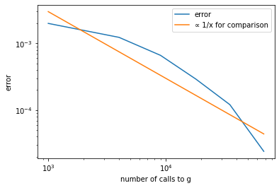

[1]:
!pip install numpy
!pip install matplotlib
!pip install qulacs
[2]:
import numpy as np
import itertools as it
import matplotlib.pyplot as plt
from qulacs import QuantumState, QuantumCircuit, Observable
from qulacs.gate import Z, RY, merge, DenseMatrix
from Adder import adder_gate
from ConstSetter import const_setter_gate, ctrl_const_setter_gate
[3]:
np.random.seed(1) #乱数のseedを設定
[4]:
# 債務者数
numObl = 2
# 各債務者のデフォルト確率を表すqubitのインデックス
oblIds = [0, 1]
# 各債務者のデフォルト確率
pds = [0.2, 0.3]
# 各債務者の債務額
exposures = [1, 2]
# 損失額の閾値
lossTh = 3
[5]:
# 計算に要する桁数
digit = 2
# 損失額を保持するレジスタのqubitのインデックス
# digitに加え一桁余分に確保しておく（last qubit（最上位ビット）がQAEのターゲットになる）
lossResIdStart = oblIds[-1] + 1
lossResIdEnd = lossResIdStart + digit
lossResIds = list(range(lossResIdStart, lossResIdEnd + 1))
qaeTargetId = lossResIdEnd
# 損失額レジスタに加える値を一時的に保持するレジスタ
tempResIdStart = lossResIdEnd + 1
tempResIdEnd = tempResIdStart + digit - 1
tempResIds = list(range(tempResIdStart, tempResIdEnd + 1))
# 可算の繰り上がり用レジスタ
carryResIdStart = tempResIdEnd + 1
carryResIdEnd = carryResIdStart + digit - 1
carryResIds = list(range(carryResIdStart, carryResIdEnd + 1))
# 総qubit数
totQubitNum = carryResIdEnd + 1
# 全qubit index
idsAll = list(range(totQubitNum))
[6]:
### 損失額を計算し、閾値以上か否かを判定する回路を、QuantumGate gとして構成していく
### 各債務者のデフォルト確率を指定のqubitの|1>のamplitudeとして埋め込み
g = 問１# 注：債務者1,2のデフォルトを示す量子ビットのインデックスはoblIds[0],oblIds[1]
### i番目の債務者がデフォルトしていれば、その債務額をtemporary registerにセットし、損失額レジスタに足す
for i in range(numObl):
setter = ctrl_const_setter_gate(exposures[i], oblIds[i], tempResIds)
g = merge(g, setter) # 債務額をtemporary registerにセット
g = merge(g, adder_gate(tempResIds, lossResIds, carryResIds)) # 債務額を損失額レジスタに加える
g = merge(g, setter) # temporary registerをリセット
### 総損失額が閾値以上となっているか否かのチェック
# 閾値の2の補数（損失額レジスタにこれを足して最上位ビットが1となる⇔損失額が閾値以上）
twosComplLossTh = (lossTh^(2 ** digit - 1)) + 1
g = merge(g, const_setter_gate(twosComplLossTh, tempResIds)) # temporary registerに閾値の2の補数をセット
g = merge(g, adder_gate(tempResIds, lossResIds, carryResIds)) # 閾値の2の補数を損失額レジスタに足す
[7]:
### gの逆回路
# g.get_matrix()によりgに対応するユニタリ行列を得て、
# それのエルミート共役に対応する回路（QuantumGate）をDenseMatrixで生成
gInv = DenseMatrix(idsAll, np.conjugate(g.get_matrix().T))
[8]:
### QAEに必要なゲート
# QAE target qubitが|1>なら-1倍するゲート
targetStateFlip = 問２ # 注：target qubitのインデックスはqaeTargetId
# |0...0>を-1倍するゲート
# DenseMatrixで生成
flipIfAll0 = DenseMatrix(idsAll, np.diag([-1 if i == 0 else 1 for i in range(2 ** totQubitNum)]))
# Grover operator
grover = merge([targetStateFlip, gInv, flipIfAll0, g])
[9]:
### QAEの設定
mMax = 4 # Grover operatorを2^mMax回まで作用
groverNums = np.array([0] + [2 ** i for i in range(mMax + 1)]) # Grover operatorの作用回数(0, 2^1, 2^2,...)
nShot = 1000 # 1つの作用回数のパターンに対する観測回数
# 尤度関数の最大点候補（[0, 0.5]を100000等分して網羅探索）
numPoints = 100000
thetas = 0.5 / numPoints * np.array(range(numPoints + 1))
[10]:
### QAE
# オブサーバブルの定義
obs = Observable(totQubitNum)
obs.add_operator(1, 'Z ' + str(qaeTargetId))
# 状態の生成・初期化
state = QuantumState(totQubitNum)
state.set_zero_state()
# gを一回作用させた状態|Ψ>
# これのtarget qubitを測定して1を得る確率 ＝ 求めたい確率（「損失額≧3」となる確率）
g.update_quantum_state(state)
# Groverの作用回数を色々と変えたとき、それぞれの下で「1を得る回数」のサンプル値を格納するリスト
n1s = []
for i in range(len(groverNums)):
groverNumAdd = groverNums[0] if i == 0 else groverNums[i] - groverNums[i - 1] # 追加の作用回数
for j in range(groverNumAdd): grover.update_quantum_state(state) # その回数だけGrover operatorを作用
prob1 = 0.5 * (1.0 - obs.get_expectation_value(state)) # target qubitに1を得る確率
n1 = np.random.binomial(nShot, prob1) # 1を得る回数のサンプル値
n1s.append(n1)
[11]:
### 対数尤度関数の定義
def liklihood(theta, i): # i: Groverの作用回数m0,m1,...,miに対する試行を勘案
ret = 0.0
for j in range(i + 1):
pSq = np.sin((2.0 * groverNums[j] + 1) * np.pi * theta)
p = pSq * pSq
ret += n1s[j] * np.log(p) + (nShot - n1s[j]) * np.log(1.0 - p)
return ret
[12]:
### 各試行における最尤点
thetaMaxLiks = np.array([thetas[np.argmax([liklihood(th, i) for th in thetas])] for i in range(len(groverNums))])
### 各試行における求めたい確率の推定値
estimates = np.power(np.sin(thetaMaxLiks * np.pi), 2)
<ipython-input-11-964349f68839>:9: RuntimeWarning: divide by zero encountered in log
ret += n1s[j] * np.log(p) + (nShot - n1s[j]) * np.log(1.0 - p)
[13]:
### Groverの作用回数と誤差のグラフ
pTrue = 0.06 # 求めたい確率の真の値
errs = np.abs(np.array(estimates) - pTrue) # 推定値との真の値の乖離
gCallNums = list(it.accumulate((2 * groverNums + 1) * nShot)) # 回路gおよびその逆を呼んだ回数
plt.xlabel('number of calls to g')
plt.ylabel('error')
# 描画
ax = plt.gca()
ax.set_xscale('log')
ax.set_yscale('log')
plt.plot(gCallNums, errs, label="error", marker="o")
# 比較のためにy=1/xを書く
plt.plot(gCallNums, 3.0 / np.array(gCallNums), label="∝ 1/x for comparison")
ax.legend()
[13]:
<matplotlib.legend.Legend at 0x1caebdfc760>

[ ]: